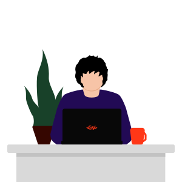
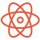

menu
Olá! Me chamo Gustavo, e sou um Desenvolvedor Front End.

Comecei meus estudos em Web Design em Junho de 2022, com cursos gratuitos do youtube como Curso em Video. Hoje, busco minha primeira experiência profissional como Desenvolvedor Front End.

Meu primeiro projeto real, onde criei uma simples página pra um restaurante.
Projeto feito usando React, onde crio um temporizador para estudos. Nele você pode escolher entre até 3 modos de tempo.
Projeto que faz uso da PokéAPI, para criar uma Pokédex com filtros de tipos e geração.
Meu primeiro projeto consumindo uma API. Nele você pode digitar no input a cidade desejada e será retornado algumas informações sobre o clima do local.
Clássico projeto do To Do List, onde aprendi e pratiquei Local Storage e algumas das operações do CRUD.
Simples formulário em HTML e CSS tematizado de LoL, usado apenas algumas linhas de JavaScript para identificar inputs válidos.
Quer saber mais sobre meus projetos ou sobre mim? Basta seguir os links abaixo!